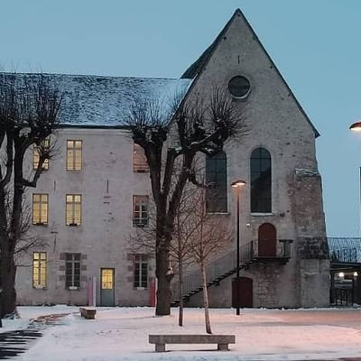

Découvrir le musée de la Vie d’autrefois en intergénérationnel
Découvrir un musée en compagnie de ceux qui ont, autrefois, utilisé les objets, les ustensiles ou vécu les différentes scènes présentées...
Le lycée Thibaut de Champagne à Provins accueille les élèves dans un cadre propice à la réussite, en proposant un enseignement exigeant.


Découvrir un musée en compagnie de ceux qui ont, autrefois, utilisé les objets, les ustensiles ou vécu les différentes scènes présentées...
Dans le cadre du festival européen latin grec, autour de 120 élèves latinistes des collèges du Montois de Donnemarie-Dontilly, Nicolas Fouquet de Mormant, Marie Curie et Lelorgne de Savigny de Provins...
Reportée à cause des conditions météorologiques de début d’année, l’intervention de Monsieur Fabrice BENSIMON, professeur d’histoire à Sorbonne Université, a finalement pu se tenir ce jeudi 16 avril 2026...